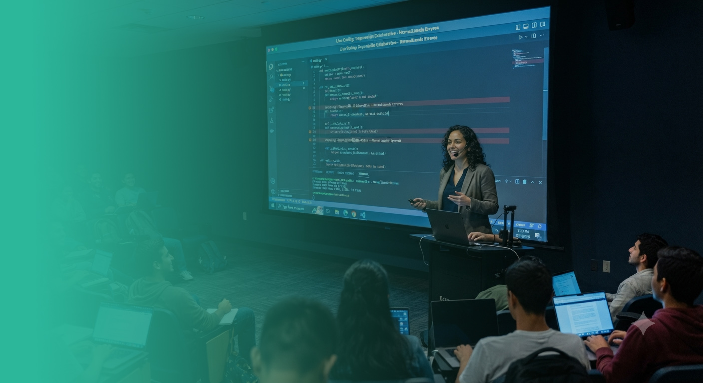
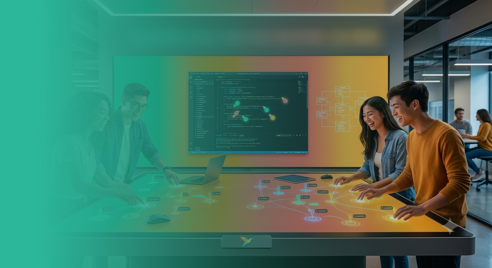
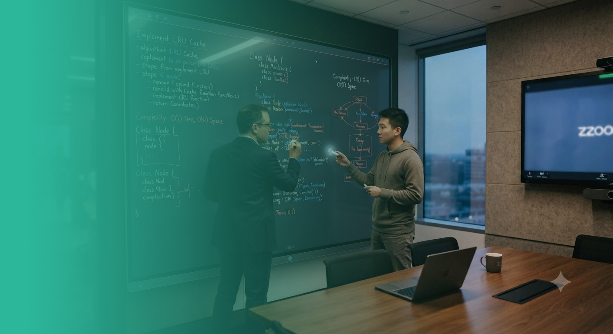
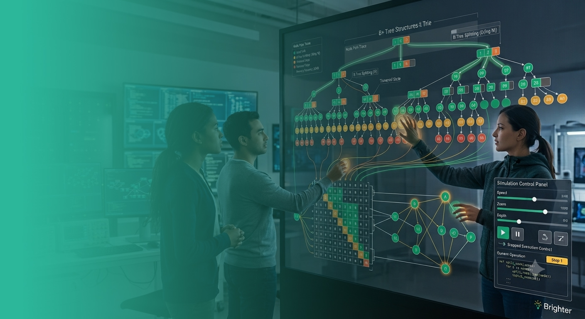
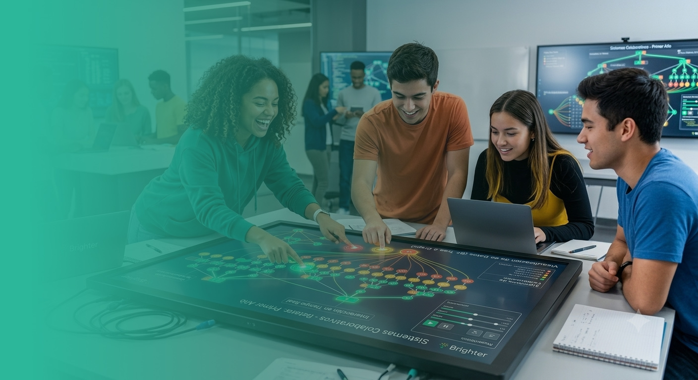
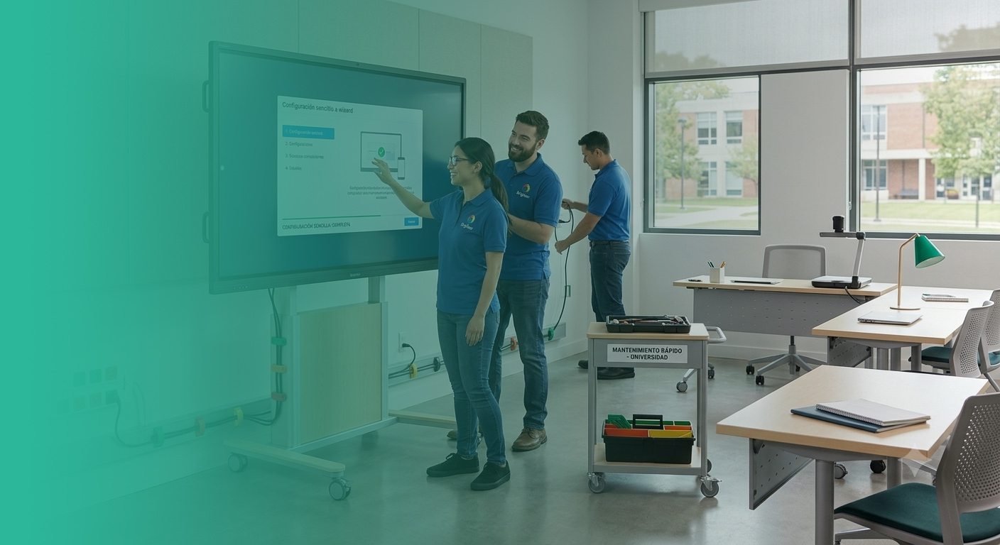
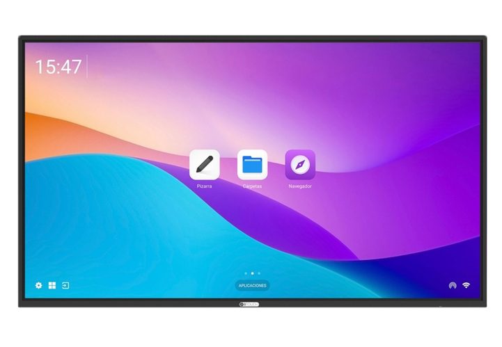
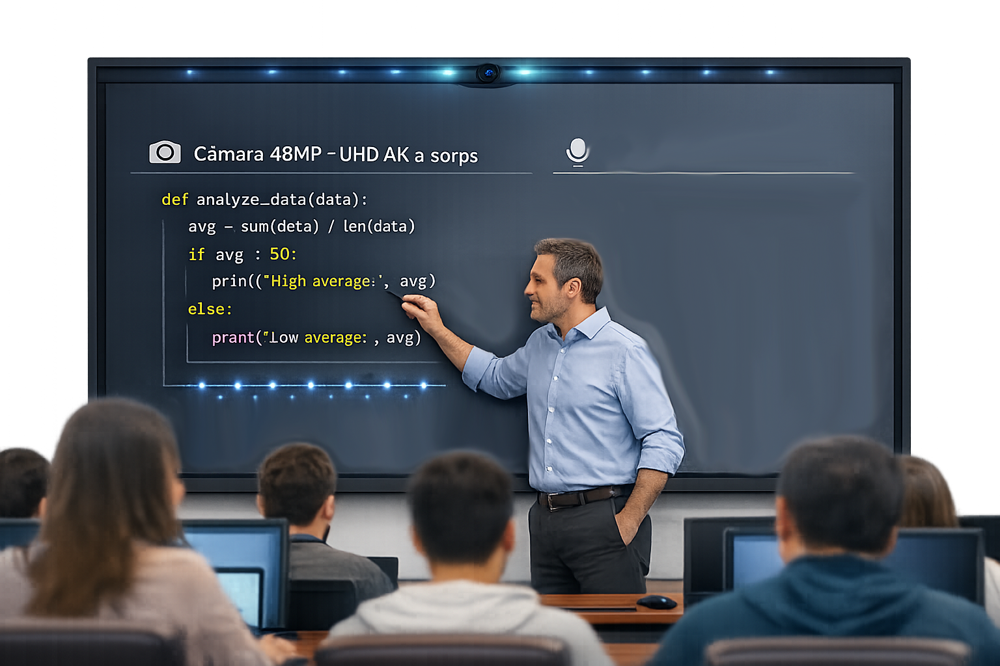
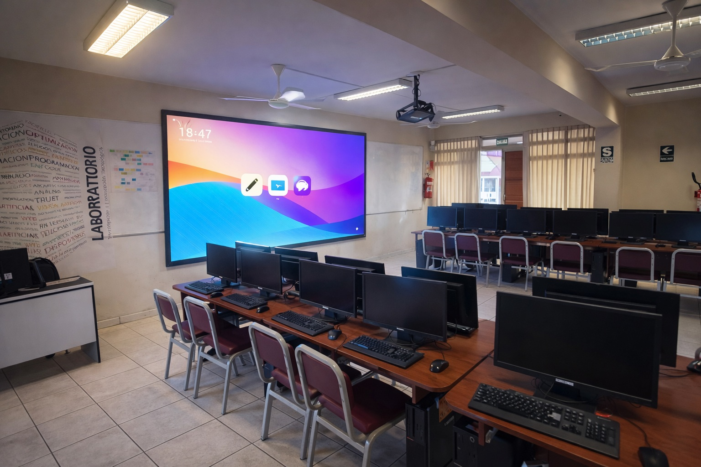

🎓
Acreditación ABET desde 1995
Cada proceso de re-acreditación evalúa también la infraestructura tecnológica del aula como evidencia institucional.
Video de fondo pendiente
assets/video/hero-loop.mp4
BTOUCH · Propuesta técnico-comercial
BT-98LKT HUB — pantalla interactiva de 98" con Windows 11 y Android 15 en un solo equipo, preparada para la Escuela Profesional de Ingeniería de Sistemas de la UNSA.
Contexto institucional
Cada proceso de re-acreditación evalúa también la infraestructura tecnológica del aula como evidencia institucional.
Ponentes internacionales exigen equipos de videoconferencia fiables, sin montajes improvisados de última hora.
Como entidad pública, esta adquisición inicia un proceso de contratación formal. La propuesta debe sostenerlo desde el primer momento.
Más allá del aula
Ventajas específicas para la formación de ingenieros de software, respaldadas por investigación educativa y práctica de la industria.

Imagen pendiente
assets/img/live-coding.jpg
Programar en vivo, cometer errores y depurarlos junto a los estudiantes normaliza el error como parte del proceso y refuerza la comprensión mejor que una diapositiva estática.

Imagen pendiente
assets/img/pair-programming.jpg
La investigación en educación de software muestra que programar en pareja aumenta la satisfacción, la persistencia y la confianza del estudiante. El táctil de 50 puntos permite trabajar a la vez, sin turnarse.

Imagen pendiente
assets/img/entrevista-tecnica.jpg
El "whiteboard coding interview" sigue siendo el formato que usan las empresas de tecnología para evaluar candidatos. Practicarlo en una pizarra grande real acerca a los estudiantes a la experiencia de una entrevista técnica.

Imagen pendiente
assets/img/algoritmos.jpg
Estructuras de datos, recursividad y complejidad se explican mejor con anotaciones en capas sobre diagramas y simulaciones ajustables en tiempo real, en vez de código estático en una diapositiva.

Imagen pendiente
assets/img/participacion.jpg
Estudios con estudiantes de primer año muestran mayor compromiso académico en clases con pantalla interactiva, especialmente en cursos técnicos que suelen percibirse como más difíciles.

Imagen pendiente
assets/img/soporte-ti.jpg
Al ser un equipo todo-en-uno, la implementación es rápida y el mantenimiento mínimo comparado con proyector, PC y cámara por separado — una consideración real para quien debe soportarlo después.
La propuesta
El BT-98LKT HUB integra un computador de gama alta dentro del panel: sin CPU externa que instalar, cablear ni proteger. Ficha técnica del modelo BT-98LKT HUB, línea BTOUCH.

Imagen del equipo pendiente
assets/img/pantalla-interactiva.png
Ventaja · Cómputo dual
Sin CPU externa que instalar, cablear ni proteger: el computador vive dentro de la pantalla.
Un solo botón físico alterna entre ambos sistemas.
Video pendiente
assets/video/feature-computo.mp4
Ventaja · Videoconferencia
Elimina la necesidad de comprar, instalar y mantener equipos de videoconferencia separados.

Imagen pendiente
assets/img/feature-video.png
Gran angular de 110° que cubre un aula o auditorio completo, sin cámara externa.
Captación de voz clara hasta 10 metros, sin micrófono de mano ni instalación adicional.
Jurados, asesores o ponentes internacionales participan con audio e imagen nítidos.
Ventajas · Panel, seguridad y conectividad
4K UHD, 410 cd/m², 178°/178° de ángulo de visión. Táctil infrarrojo de 50 puntos simultáneos, precisión ±1mm: varios estudiantes trabajan a la vez. Vidrio templado 3mm, dureza 7H, antibacteriano y antihuellas.
Bloqueo por NFC con 2 tarjetas incluidas. Detección PIR con apagado automático y sensor de luz ambiental.
Wi-Fi 6, Bluetooth 5.2, hotspot. 4 HDMI, 3 LAN (RJ45), 4 USB Type-C, USB 2.0/3.0, S/PDIF, DisplayPort y RS232.

Imagen pendiente
assets/img/feature-tactil.jpg
Aplicación directa
Cámara y micrófonos integrados eliminan errores técnicos frente a jurados o asesores a distancia.
Videoconferencia de calidad profesional con ponentes internacionales, sin laptops ni proyectores extra.
Un docente o alumno participa en remoto con audio e imagen nítidos.
Windows 11 integrado corre IDEs y herramientas reales de la carrera, sin PC de laboratorio aparte.
Infraestructura de punta como evidencia institucional en procesos de acreditación.
El bloqueo NFC protege un activo de alto valor en un espacio de uso compartido.
Respaldo comercial
Precios, condiciones de pago y plazos de entrega: pendientes de completar según cotización formal.
Siguiente paso
Proponemos dos acciones concretas para avanzar con la Escuela Profesional de Ingeniería de Sistemas.
Ver el BT-98LKT HUB en funcionamiento: cómputo dual, videoconferencia y panel táctil en un caso de uso real de la escuela.
Agendar demoDar inicio al proceso de contratación institucional con la información técnica ya validada en esta propuesta.
Solicitar cotizaciónContacto y datos de coordinación: pendientes de completar por Brighter Perú S.A.C.